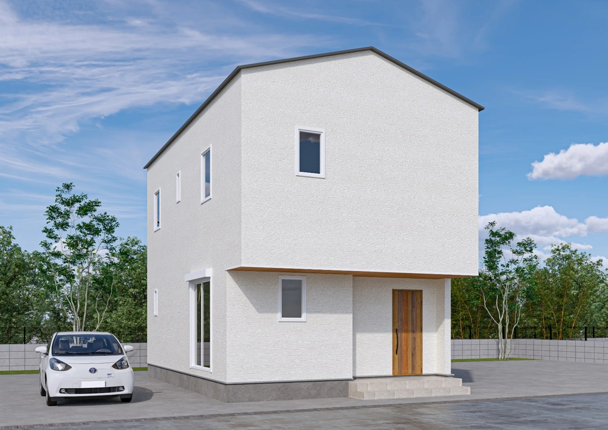
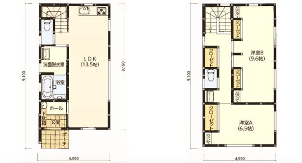
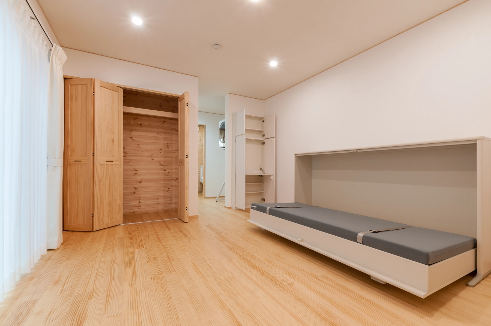
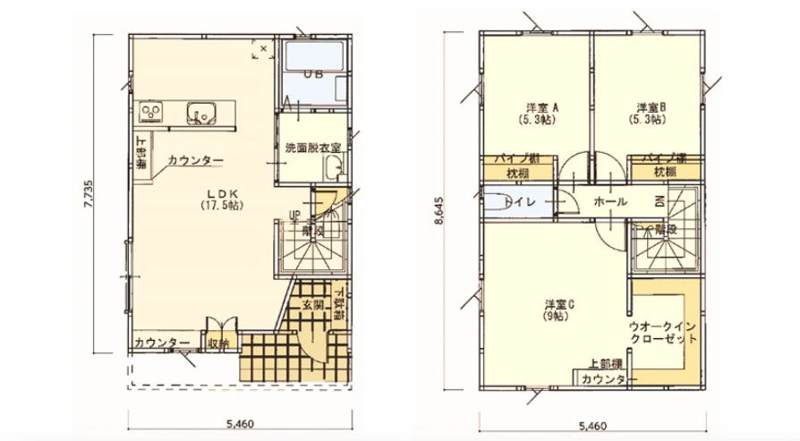
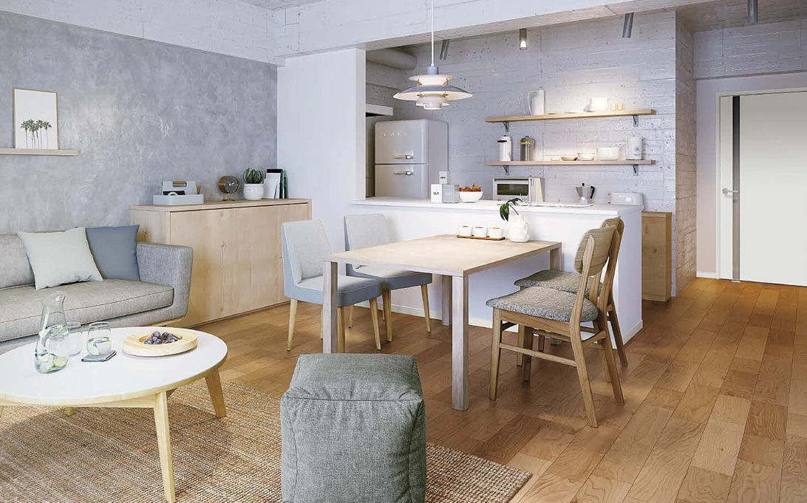
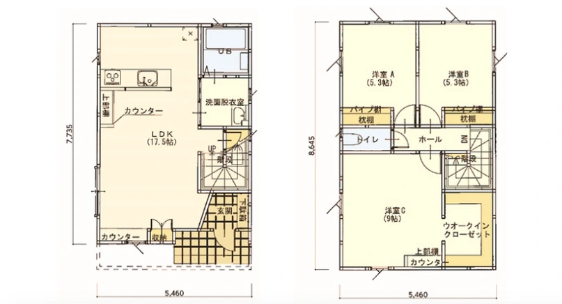
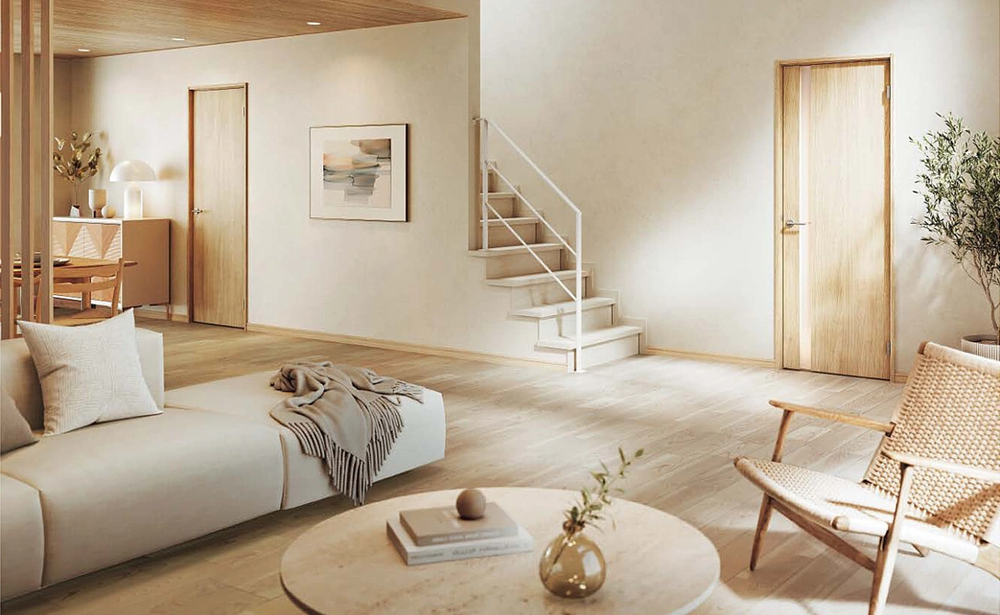

暮らし方から選ぶ、３つのプラン
Ainos Smartのラインナップ
価格は掲載の2階建て住宅価格表に合わせています。本体価格以外に、仮設、付帯工事費や諸経費がかかります。仕様・総費用はご相談ください。
ニュースターNEW STAR
コンパクトでも、開放感を。
23.75坪・3LDK ／ 本体価格 1,853万円 （税込）
狭小地に対応したコンパクト設計で、壁付けキッチンと一体型ダイニングによる効率的な家事動線を実現。リビングの大きな窓とウッドデッキが開放感を演出し、2階は可変型の洋室や洗面台・トイレを備えた気配り設計。外観はブラック×木目のシンプルモダンスタイル。


画像を大きく見る ↗

画像を大きく見る ↗レイヤードLAYERED
使いやすさを、細やかに。
26.66坪・3LDK ／ 本体価格 2,080万円 （税込）
コンパクトで機能的な間取りに、シンプルで洗練された外観デザイン。LDKにはスタディとワークの両方に使える2つのカウンターを設置し、主寝室にはウォークインクローゼットとカウンターを備えた、使い勝手の良い人気プラン。


画像を大きく見る ↗

画像を大きく見る ↗エミールEMILE
家族の毎日に、やさしい工夫。
27.92坪・3LDK ／ 本体価格 2,180万円 （税込）
玄関の手洗器やLDKのカウンターなど子育てに配慮した設計。主寝室には2つのクローゼットを備えた収納重視の間取りで、木目調のやさしい外観が魅力。


画像を大きく見る ↗

画像を大きく見る ↗家づくり無料相談
あなたにとって、丁度良い住まいを。
土地やご予算、家族の暮らし方からご相談ください。